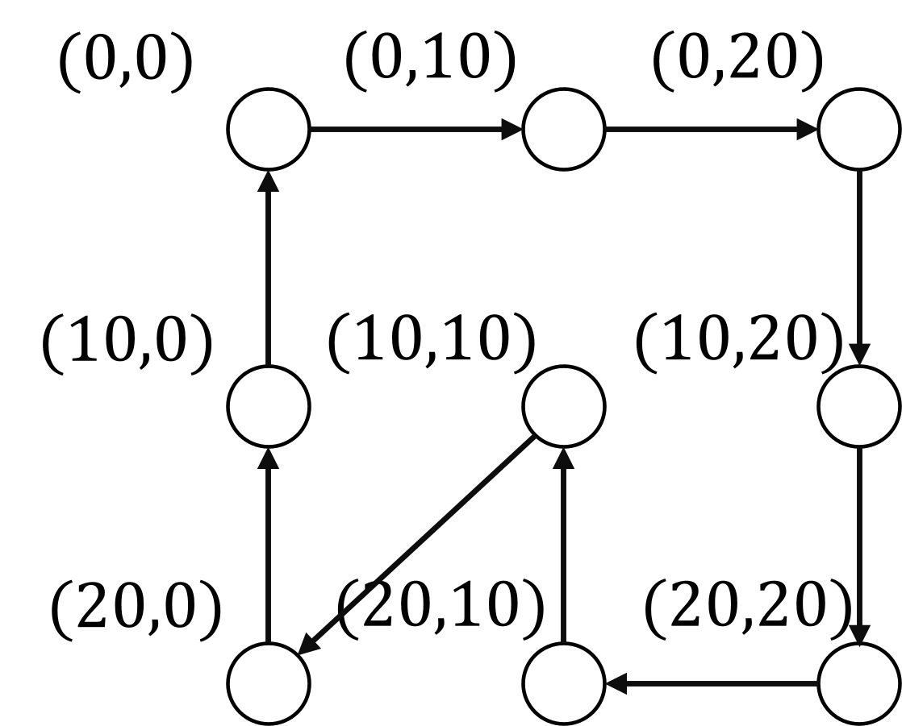

Traveling Salesman Problem
The Traveling Salesman Problem (TSP) asks for the shortest tour that visits every node exactly once and returns to the start. We assume that the nodes are placed on a plane and that the tour length is measured using the Euclidean distance.
In the figure below, an example of nine nodes and an optimal tour is shown:

QUBO formulation of the TSP
A tour can be represented by a permutation of the nodes. Accordingly, we use a permutation matrix to encode a TSP solution.
Let $X=(x_{i,j})$ ($0\leq i,j\leq n-1$) is a matrix of $n\times n$ binary values. The matrix $X$ is a permutation matrix each row and each column contains exactly one entry equal to 1, as illustrated below.

We interpret $x_{k,i}$ as “the $k$-th position in the tour is node $i$”. Therefore, every row and every column of $X$ must be one-hot, i.e., the following constraints must hold:
\[\begin{aligned} {\rm row}:& \sum_{j=0}^{n-1}x_{i,j}=1 & (0\leq i\leq n-1)\\ {\rm column}:& \sum_{i=0}^{n-1}x_{i,j}=1 & (0\leq j\leq n-1) \end{aligned}\]Let $d_{i,j}$ is denote the distance between nodes $i$ and $j$. Then the tour length for a permutation matrix $X$ can be written as:
\[\begin{aligned} {\rm objective}: &\sum_{k=0}^{k-1} d_{i,j}x_{k,i}x_{(k+1)\bmod n,j} \end{aligned}\]This expression adds $d_{i,j}$ exactly when node $i$ is visited at position $k$ and node $j$ is visited next (at position $(k+1)\bmod n$), so it equals the total length of the tour.
QUBO++ program for TSP
Using the permutation-matrix formulation above, we can write a QUBO++ program for the TSP as follows:
#include "qbpp.hpp"
#include "qbpp_easy_solver.hpp"
class Nodes {
std::vector<std::pair<int, int>> nodes{{0, 0}, {0, 10}, {0, 20},
{10, 0}, {10, 10}, {10, 20},
{20, 0}, {20, 10}, {20, 20}};
public:
const std::pair<int, int>& operator[](std::size_t index) const {
return nodes[index];
}
std::size_t size() const { return nodes.size(); }
int dist(std::size_t i, std::size_t j) const {
auto [x1, y1] = nodes[i];
auto [x2, y2] = nodes[j];
const int dx = x1 - x2;
const int dy = y1 - y2;
return static_cast<int>(
std::llround(std::sqrt(static_cast<double>(dx * dx + dy * dy))));
}
};
int main() {
auto nodes = Nodes{};
auto x = qbpp::var("x", nodes.size(), nodes.size());
auto constraints = qbpp::sum(qbpp::vector_sum(x) == 1) +
qbpp::sum(qbpp::vector_sum(qbpp::transpose(x)) == 1);
auto objective = qbpp::expr();
for (size_t i = 0; i < nodes.size(); ++i) {
auto next_i = (i + 1) % nodes.size();
for (size_t j = 0; j < nodes.size(); ++j) {
for (size_t k = 0; k < nodes.size(); ++k) {
if (k != j) {
objective += nodes.dist(j, k) * x[i][j] * x[next_i][k];
}
}
}
}
auto f = objective + constraint * 1000;
f.simplify_as_binary();
auto solver = qbpp::easy_solver::EasySolver(f);
solver.time_limit(1.0);
auto sol = solver.search();
auto result = qbpp::onehot_to_int(sol(x));
std::cout << "Result: " << result << std::endl;
}
In this program, the coordinates of nodes 0 through 8 are stored in a Nodes object nodes.
We create a 2D array x of binary variables and build the one-hot constraints and the tour-length objective.
They are combined into a single QUBO expression f by adding the constraints with a penalty weight (here, 1000) to prioritize feasibility.
We then solve f using EasySolver with a 1.0-second time limit.
The resulting assignment sol(x) is a permutation matrix, which is converted to a list of integers (a permutation) by qbpp::onehot_to_int(), and printed.
This program produces the following output:
Result: {7,8,5,2,1,0,3,4,6}
Fixing the first node
Without loss of generality, we can assume that node 0 is the starting node of the tour. Because the TSP tour is invariant under cyclic shifts, fixing the start position does not change the optimal tour length.
By fixing the start node, we can reduce the number of binary variables in the QUBO expression. Specifically, we enforce that node 0 is assigned to position 0 in the permutation matrix. To do this, we fix the following binary variables:
\[\begin{aligned} x_{0,0} &= 1\\ x_{i,0} &= 0& (i\geq 1)\\ x_{0,j} &= 0& (j\geq 1) \end{aligned}\]These assignments ensure that node 0 appears only at position 0, and that no other node is assigned to position 0. As a result, the effective problem size is reduced, which generally makes the QUBO easier to solve for local-search–based solvers.
QUBO++ program for fixing the first node
In QUBO++, fixed variable assignments can be applied using the qbpp::replace() function:
qbpp::MapList ml;
ml.push_back({x[0][0], 1});
for (size_t i = 1; i < nodes.size(); ++i) {
ml.push_back({x[i][0], 0});
ml.push_back({x[0][i], 0});
}
auto g = qbpp::replace(f, ml);
g.simplify_as_binary();
auto solver = qbpp::easy_solver::EasySolver(g);
solver.time_limit(1.0);
auto sol = solver.search();
qbpp::Sol full_sol(f);
full_sol.set(sol);
full_sol.set(ml);
auto result = qbpp::onehot_to_int(full_sol(x));
std::cout << "Result: " << result << std::endl;
First, we create a qbpp::MapList object ml, which stores fixed assignments of variables.
Each assignment is added using the push_back() member function.
Next, we call qbpp::replace(f, ml), which returns a new expression obtained by substituting the fixed values specified in ml into the original QUBO expression f.
The resulting expression is stored in g and simplified.
We then create a solver for g and obtain a solution sol.
Since sol corresponds to the reduced problem, we reconstruct a solution for the original expression f by creating a qbpp::Sol object full_sol.
Both the solver result sol and the fixed assignments ml are applied to full_sol.
Finally, the permutation matrix represented by full_sol(x) is converted into a permutation using qbpp::onehot_to_int() and printed.
This program produces the following tour starting from node 0:
Result: {0,3,6,7,8,5,2,1,4}